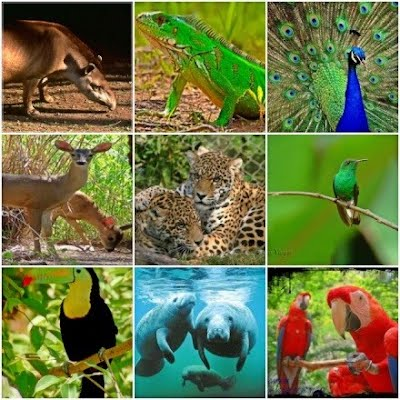

Pagina principal Animales en Honduras Parque nacional la tigra Biosfera del rio Platano
Animales en Honduras
La república de Honduras, es un país centroamericano, geográficamente ubicado dentro de los trópicos, lo que le permite que su naturaleza brinde un hábitat adecuado tanto para la flora y esta a su vez permite que se desarrolle una gran diversidad de fauna.
Vista de un Tiburón cerca de la Isla de Útila en Honduras.
Muchas de estas especies se encuentran en vía de extinción, lo cual ha planteado al gobierno hondureño, secretarías y organizaciones naturistas nacionales e internacionales, promover y velar por la protección tanto la biodiversidad de especies, como las reservas naturales existentes.
La fauna en Honduras es riquísima y variada siendo los más comunes los de vida arbórea y los que viven en las corrientes fluviales aguas lacustres.
Los animales grandes no son muy numerosos pero hay cientos de especies de reptiles, anfibios y pájaros; lagartos y muchas variedades de peces en las corrientes. Monos, murciélagos y miríadas de pájaros abundan en los árboles. La avifauna es variada y muy abundante entre los que se encuentran:
Colibríes o gorriones en más de 20 especies diferentes; Una de ellas es el colibrí esmeralda, una especie de colibríes endémica de Honduras
